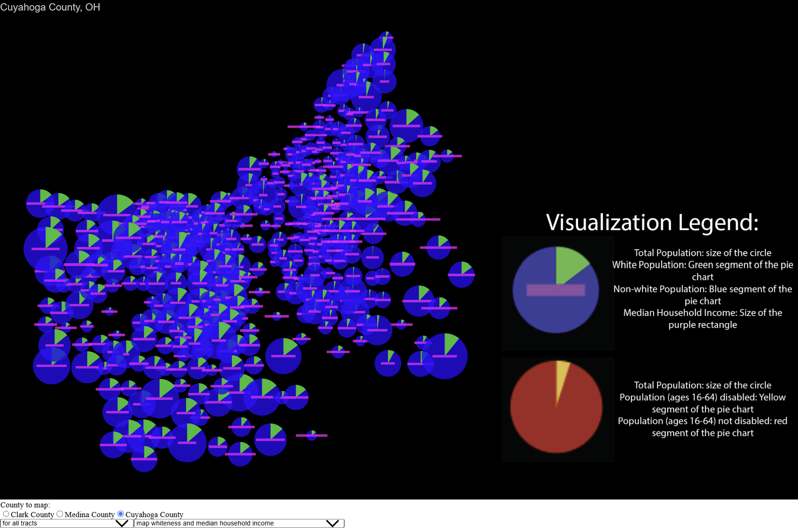

Census Visualization
An interactive map displaying the pie charts showing information from census tracts from one of three Ohio
counties at a time. Created using JavaScript with the p5.js library.
Users can select which county to map; the counties being Clark, Medina, and Cuyahoga counties. Users can
also filter for all tracts, all tracts where the population has grater than ten percent under the poverty
line, or all tracts where more than ten percent of the population is receiving public assistance.
Additionally, users can select what pie chart to map; showing pie charts depicting either what percentage of
the population is white and the median household income of the tract or the population within the age range
of 16 to 64 and what percent of that population is disabled. Clicking on each pie chart shows data
corresponding with the data the pie chart represents.
This project provided me an opportunity to work with processing external JSON file data and displaying it in
a meaningful way. The filtering processes I learned in this project have been useful in projects I have
worked on since.